Inspect-REPA: When, Where, and How Long Should Diffusion Models Align Representations?
by Tianyu Zhao, Jethro Au
Representation alignment is usually trained as a static, always-on auxiliary loss for diffusion transformers. This project asks whether that assumption is necessary. We study the question in three stages on a SiT-B/2 backbone trained on ImageNet-100 at 256px latent diffusion. Stage 1 validates the baseline ordering of Vanilla, REPA, and iREPA and tests layer placement. Stage 2 studies hard early-stop schedules for the projection term. Stage 3 evaluates long-horizon cosine annealing over 250k steps. Across all stages, we analyze not only endpoint FID, KID, and Inception Score, but also optimization trajectories, synchronized sample timelines, and Pareto views in IS versus log(1/FID). The resulting picture is that alignment is most useful early, its schedule changes the fidelity-diversity path through training, and smooth late relaxation can outperform always-on alignment over a sufficiently long horizon.
Representation alignment improves diffusion training by supervising intermediate activations with features from a pretrained visual encoder. REPA and iREPA show that this auxiliary signal can accelerate convergence, but later work also suggests that its benefit is not uniform over training.
This motivates the Inspect-REPA question: when, where, and for how long should a generative model receive alignment? We treat alignment as an allocation problem rather than a fixed design choice. Stage 1 validates the baseline and the aligned layer. Stage 2 asks whether the projection loss can be turned off partway through training. Stage 3 asks whether a smooth long-horizon decay is better than a hard cutoff or an always-on schedule.
2. Related Work
REPA established the basic claim that diffusion transformers benefit from aligning intermediate hidden states to pretrained visual features. iREPA strengthened that result by replacing the MLP projector with a convolutional projection and spatial normalization, arguing that spatial structure matters more than global semantic strength alone.
HASTE is the main bridge to the later stages of this project. It suggests that alignment helps early yet can plateau or become restrictive later, which turns schedule design into a first-class question rather than a minor tuning detail.
Related directions such as SARA, RAE, and U-REPA broaden the representation-alignment design space. The open problem is no longer whether external guidance can help, but which parts of that guidance are worth paying for. This project addresses that question through a staged study of layer choice and schedule design.
3. Experimental Setup
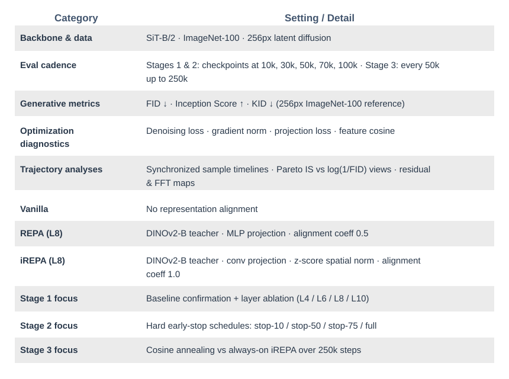
Experimental protocol summary used across the three-stage study.
4. Stage 1: Baseline Confirmation and Layer Ablation
Stage 1 establishes the aligned anchor used by the later schedule studies. It first checks that a faithful small-scale implementation preserves the expected ordering of Vanilla, REPA, and iREPA, then asks the first allocation question: which internal layer should receive alignment?
4.1 Baseline Confirmation
The baseline runs provide a clean signal. Vanilla is a valid control, while both aligned variants separate from it by the middle of training. The main Stage 1 result is therefore not just final ranking, but faster convergence under alignment.
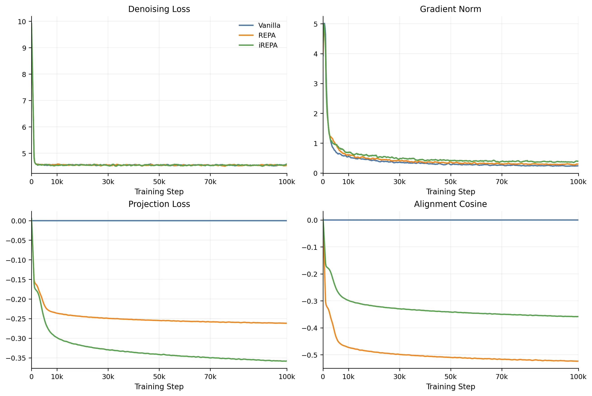
Figure 1. Training-side dynamics across Vanilla, REPA, and iREPA. Vanilla remains a clean control, REPA maintains active alignment, and iREPA reaches the lowest final denoising loss.
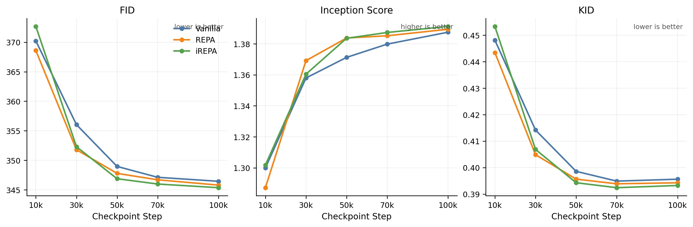
Figure 2. Checkpoint evaluation curves. The main signal is not only the final ranking but the faster mid-stage improvement of aligned training relative to Vanilla.
Method
30k Checkpoint
50k Checkpoint
FID ↓
IS ↑
KID ↓
FID ↓
IS ↑
KID ↓
Vanilla
356.04
1.3580
0.4142
348.97
1.3712
0.3986
REPA (L8)
351.79
1.3692
0.4049
347.79
1.3837
0.3957
iREPA (L8)
352.30
1.3604
0.4069
346.88
1.3836
0.3943
The mid-stage checkpoints make the separation easiest to read. At 30k, REPA already leads Vanilla on all three metrics, while iREPA is competitive on FID and KID. By 50k, both aligned variants outperform Vanilla across the board, with iREPA taking the strongest FID/KID position. This establishes a credible aligned reference trajectory for the later schedule studies.
Vanilla Fixed-seed samples at 100k.
REPA (L8) Fixed-seed samples at 100k.
iREPA (L8) Fixed-seed samples at 100k.
4.2 Layer Ablation for iREPA
We next vary the aligned block while keeping the rest of the iREPA recipe fixed. The practical question is whether earlier layers improve mid-stage acceleration enough to challenge the standard Layer 8 anchor.
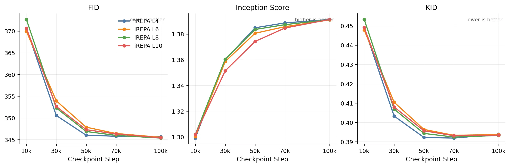
Figure 3. iREPA layer-ablation checkpoint curves. Earlier layers are competitive in the faster-convergence regime, while Layer 8 remains the strongest final endpoint.
The iREPA sweep is tight, but the pattern is clear enough: earlier layers are competitive in the fast-convergence regime, while Layer 8 remains the most stable final anchor. The practical takeaway is that iREPA benefits from earlier-layer acceleration without forcing a change to the baseline configuration inherited by Stages 2 and 3.
4.3 Layer Ablation for REPA
We repeat the same sweep for REPA to test whether the early-layer effect is specific to iREPA or a broader property of representation-aligned training.
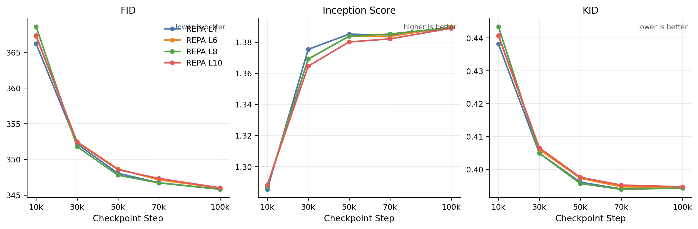
Figure 4. REPA layer-ablation checkpoint curves. Layer 4 is best very early, reinforcing the view that earlier layers can help reach a better regime faster.
REPA shows the sharper early-layer effect. Layer 4 is best at the earliest checkpoint, and the separation is cleaner than in iREPA. By the mid-stage checkpoints the curves regroup, which suggests that the main gain of earlier-layer alignment is faster entry into a good regime rather than a radically different final endpoint.
4.4 Stage 1 Takeaway
Stage 1 establishes a usable anchor for the rest of the project. Alignment is beneficial, the strongest signal is the mid-stage convergence advantage, and earlier layers can help the model reach that regime faster. With that anchor in place, the next question is no longer whether alignment works, but how it should be scheduled.
5. Stage 2: Early-Stop Projection Ablation
Stage 1 established iREPA (Layer 8) as the strongest aligned anchor. Stage 2 builds on that by asking whether the projection term needs to stay active for the full training run — or whether switching it off at the right point can recover most of the quality benefit at lower alignment cost. The core hypothesis, motivated by HASTE, is that projection pressure is most valuable early in training when representations are still unanchored, and contributes diminishing returns once the model has consolidated a stable feature space. To test this, we hold the backbone, teacher, and 100k horizon fixed, and vary only the cutoff point across four schedules: stop-10, stop-50, stop-75, and full (always-on reference).
5.1 Training Diagnostics
Figures 5 and 8 show the projection-loss curves and fixed-seed sample timeline side by side — the scalar intervention and its qualitative effect on generated samples across the 100k run.
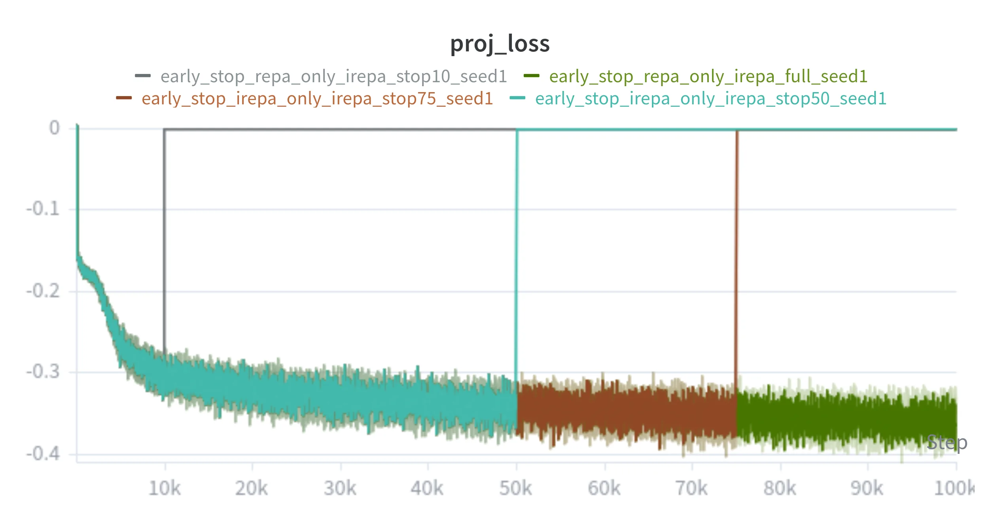
Figure 5. Stage 2 projection-loss curves. Each sparse variant drops to zero at its designated early-stop fraction, while the full schedule maintains alignment pressure throughout.
Always-On iREPA (full schedule)
Sparse iREPA (stop-50)
Checkpoint: 0
Figure 8. Stage 2 synchronized training timeline. Scrub or autoplay to inspect fixed-seed sample evolution across the 100k horizon for the full schedule and the stop-50 sparse schedule.
5.2 Performance Metrics
Figures 6 and 7 show the checkpoint metrics and per-metric deltas across all four schedules. Stop-10 produces the largest quality degradation; stop-75 incurs a near-invisible FID and KID penalty while IS edges above the always-on baseline — projection pressure is front-loaded, and its marginal value decays as the representation consolidates.
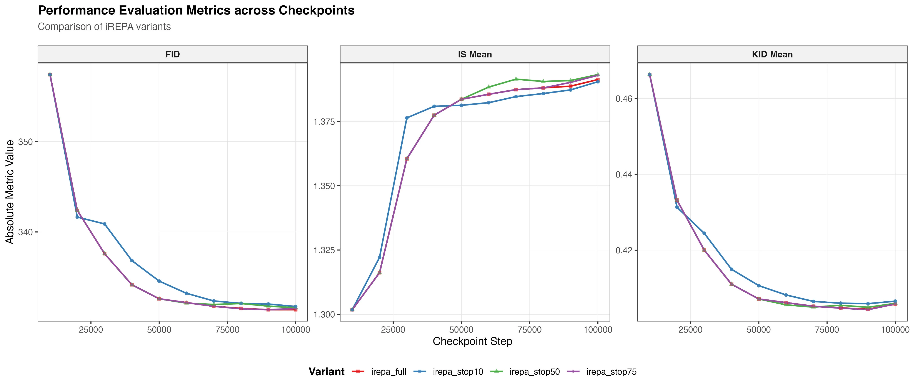
Figure 6. Stage 2 evaluation metrics: FID, KID, and IS recorded at every 10k checkpoint across the 100k trajectory for all early-stop variants.
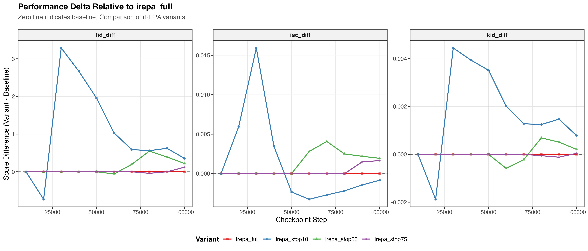
Figure 7. Stage 2 performance delta: per-metric deviation of each sparse schedule relative to the always-on irepa_full baseline across all evaluated checkpoints.
5.3 Understanding the Stage 2 Divergence
When early stopping hurts quality, the natural question is: is that a structural problem or an efficiency problem? An efficiency problem would mean the model is still heading in the right direction — just taking smaller steps, progressing more slowly. A structural problem would mean the schedule has redirected the optimization toward a different region of the outcome space entirely. A marginal utility framing helps distinguish the two: if each active projection step is an investment with diminishing returns, an efficient early stop should leave the model on the same Pareto frontier — just at an earlier point along it. But if removing alignment redirects the trajectory, the model moves to a different Pareto path, trading off fidelity and diversity in a different order or proportion.
To look at this, Figure 9 plots IS versus log(1/FID) trajectories in a Pareto-style view, where the upper-right corner is jointly preferred and the path each schedule takes through that space is as informative as its final position. If the penalty is purely one of efficiency, the sparse schedules should trace similar paths to the full baseline — just progressing more slowly. If it is structural, the trajectories will diverge in direction, not just in pace.
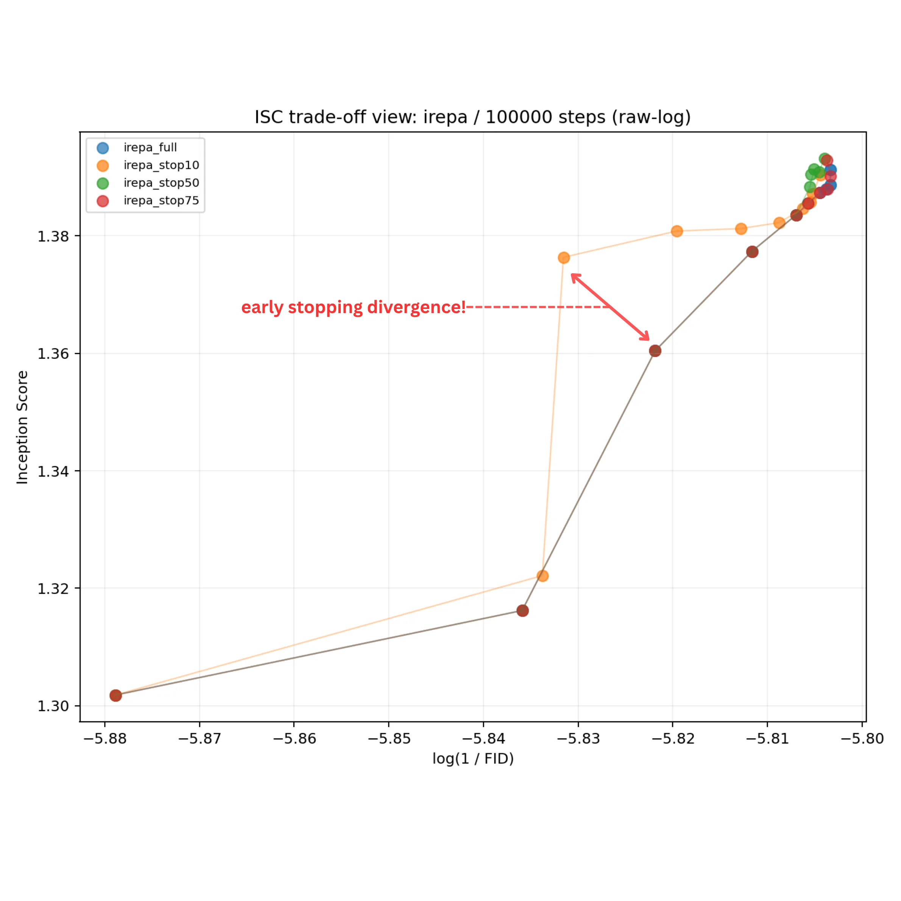
Figure 9. Stage 2 Pareto view: IS versus log(1/FID) optimization trajectories at 10k-step resolution for all early-stop variants.
Always-on iREPA moves predominantly along the log(1/FID) axis first, acquiring diversity later. Early-stopped variants invert this order — rising along IS before converging toward FID — most sharply for stop-10 and progressively weaker for stop-50. Schedule timing changes not just the magnitude of quality achieved, but the order in which fidelity and diversity are acquired.
5.4 Stage 2 Takeaway
Projection pressure is front-loaded: marginal returns are highest early and decay as representations stabilize. Removing alignment late (stop-75) costs almost nothing; removing it too early (stop-10) causes real degradation. More importantly, the Pareto view shows this is a structural effect — schedule timing changes the order in which fidelity and diversity are acquired, not just the final endpoint.
6. Stage 3: Parameterized Schedule Study
Stage 2 shows that hard cutoffs can approximate always-on alignment at low cost, but they are blunt instruments — the schedule is fixed before training begins and cannot respond to how the optimization is actually unfolding. That raises a natural follow-up: can we design a parameterized schedule that is expressive enough to study alignment decay, while also being a credible candidate for improvement? A smooth decay gives us a continuous knob to study whether quality differences are structural — the schedule is redirecting the optimization path — or simply an efficiency problem — the model is on the same path but progressing more slowly. Stage 3 tests this with a single comparison: cosine annealing versus always-on iREPA over a 250k horizon.
6.1 Long-Horizon Cosine Schedule at 250k
Schedule Definition
Let the training step be \(k\), the total number of steps be \(T\), the denoising loss be \(\mathcal{L}_{\text{denoise}}\), and the projection loss be \(\mathcal{L}_{\text{proj}}\). The base objective is
For the cosine schedule implemented in the loss function, define normalized progress \(p = k / T\), start fraction \(s\), end fraction \(e\), and normalized in-window coordinate \(x = (p - s)/(e - s)\). Then
$$
\lambda_{\text{proj}}^{\text{cos}}(k) =
\begin{cases}
\frac{1}{2}\left(1 + \cos(\pi x)\right), & s \le p < e, \\
0, & \text{otherwise.}
\end{cases}
$$
In the cosine run, the interval spans the full training horizon, so \(s = 0\) and \(e = 1\). At initialization, \(p = 0\), hence \(x = 0\) and \(\lambda_{\text{proj}}^{\text{cos}}(0) = 1\), matching the fixed iREPA weight exactly at step zero and decaying continuously to zero by step \(T\).
Training Diagnostics
Figures 10 and 13 show the projection-loss decay and fixed-seed sample evolution across the 250k horizon — the cosine weight tracks the fixed schedule closely early on before diverging smoothly as the multiplier decays.
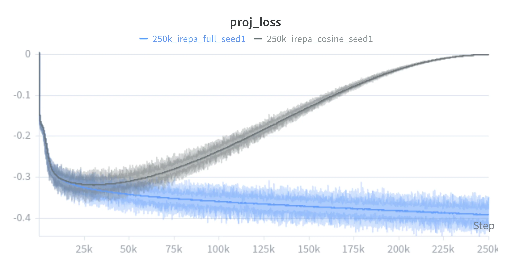
Figure 10. Stage 3 projection-loss curves: fixed versus cosine iREPA over the 250k horizon.
Fixed iREPA (full 250k schedule)
Cosine iREPA (250k)
Checkpoint: 0
Figure 13. Stage 3 synchronized training timeline. Scrub or autoplay to inspect fixed-seed sample evolution across the 250k horizon for fixed iREPA and cosine iREPA.
Metric Comparison
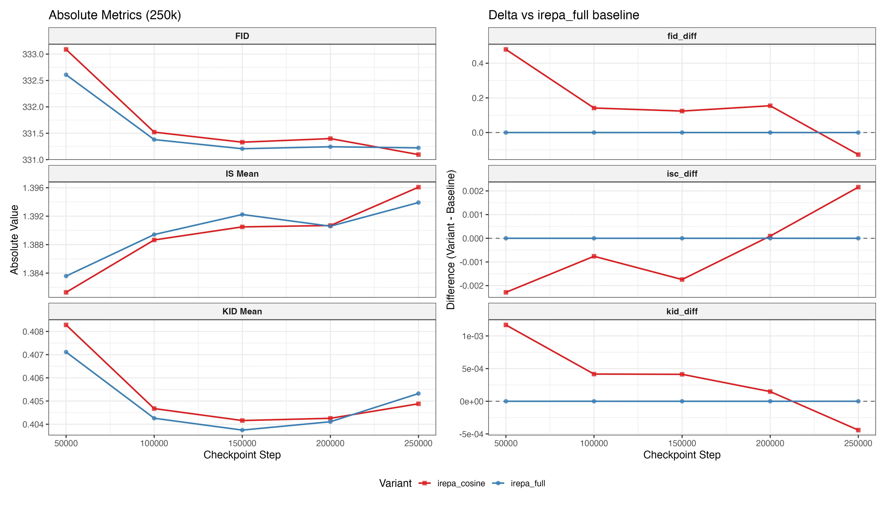
Figure 11. Stage 3 evaluation metrics (FID, KID, IS) at 50k-step intervals over the 250k training horizon for fixed and cosine iREPA.
Cosine annealing opens with an early FID and IS deficit — even a gentle decay relaxes projection pressure before fidelity has consolidated. The gap narrows through the mid-horizon as the diminishing-returns dynamic from Stage 2 takes hold. The decisive inflection is between 200k and 250k: by the final checkpoint cosine overtakes fixed iREPA on FID, KID, and IS simultaneously, a benefit that only materialises when the horizon is long enough for late-stage relaxation to matter.
Pareto Frontier View
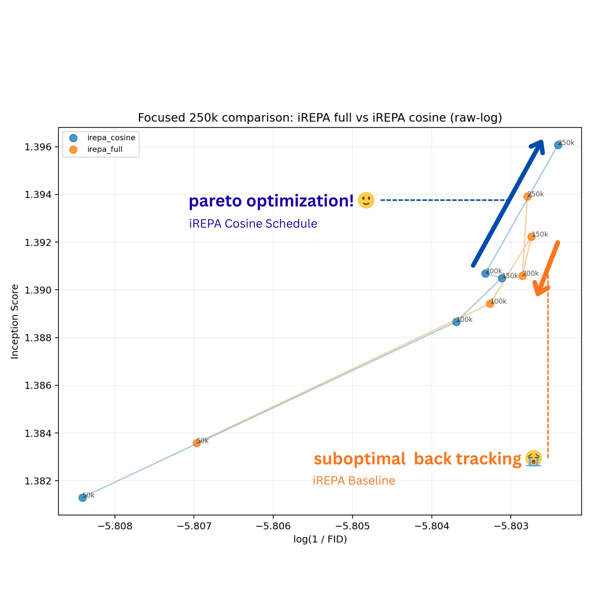
Figure 12. Stage 3 Pareto view: IS versus log(1/FID) trajectories at 50k-step resolution for fixed and cosine iREPA over the 250k horizon.
Both schedules make joint progress toward the upper-right (preferred) region through 100k. After that they diverge — and what is particularly interesting here is not just that cosine ends better, but how the fixed schedule behaves. iREPA_full backtracks by 200k, regressing on both IS and log(1/FID) before a partial late recovery. This is not a plateau but a genuine reversal, suggesting that sustaining full projection pressure deep into training may gradually push the model away from a jointly preferred outcome. Scalar endpoints would smooth over this — the final numbers might still look reasonable — but the trajectory makes the instability visible.
Cosine annealing appears to avoid this. By gradually relaxing projection pressure, it seems to prevent the model from becoming over-constrained in the way the fixed schedule does. The result is a more stable path — moving forward, or at least holding, on at least one axis per checkpoint. By 250k it reaches a Pareto-superior point on both IS and log(1/FID), with the gain seeming to come from sidestepping the late-stage regression rather than from simply training longer.
Residual and Frequency Views
Generational Comparison at 250k Steps
Fixed iREPACosine iREPA
Slide to compare latent structure and fine boundary edits.
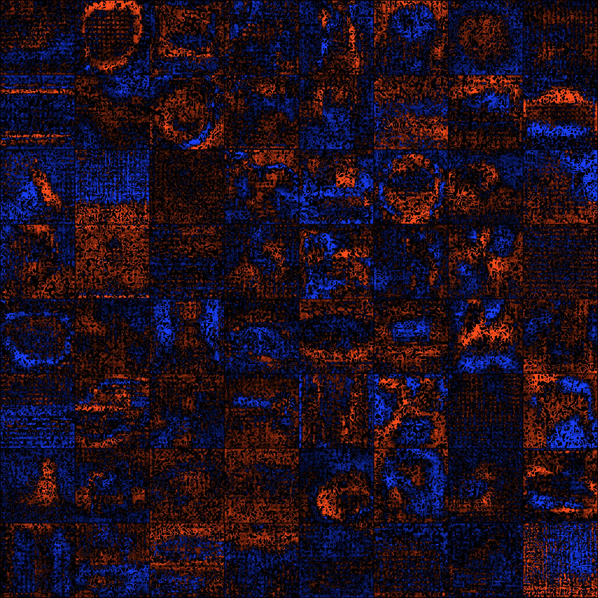
Signed luminance residual (blue = fixed brighter, red = cosine brighter)
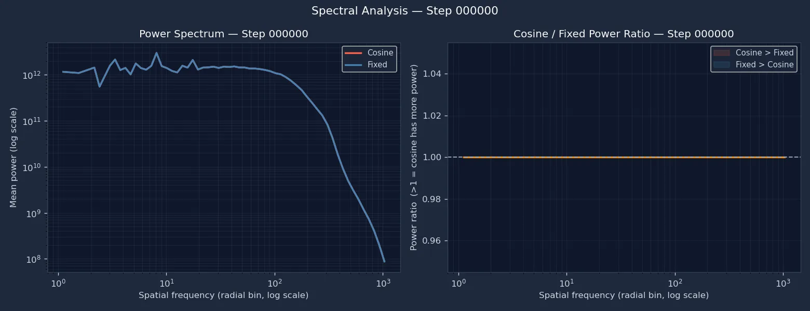
Checkpoint: 0
Spatial-frequency power spectrum and cosine/fixed power ratio across the 250k training horizon.
Figure 14. Final sample comparison and signed luminance residual at the 250k checkpoint. Left: fixed iREPA versus cosine iREPA. Right: pixel-level signed residual. Figure 15. Per-checkpoint spatial-frequency analysis across the 250k horizon.
6.2 Residual, Frequency Analysis and Takeaway
The signed luminance residual (Figure 14) shows divergence at object edges and contour transitions — structural rather than a global brightness shift. Two frequency regimes stand out in the FFT view (Figure 15). At coarsest global scales, fixed iREPA carries somewhat more power through the mid-to-late phase. At intermediate scales capturing contours and fine detail, cosine progressively opens capacity as the projection weight decays — consistent with the Pareto interpretation that fixed alignment persistently anchors coarse structure at the cost of finer scales.
The early FID cost of cosine annealing is transient. By 250k it reaches a Pareto-superior outcome on FID, KID, and IS — with gains localised to intermediate spatial frequencies where fixed alignment appears to constrain capacity. Alignment is an allocation problem: the question is not whether to use it, but how its weight should evolve.
7. Limitations
The framework established here is useful for studying scheduled representation alignment, but several limitations bound the conclusions that can be drawn responsibly.
7.1 Computational Cost and Evaluation Density
Each full run on a single A100 80GB GPU is expensive, which limits checkpoint density and the size of schedule sweeps. In the 250k stage, evaluation is necessarily coarsened to 50k-step intervals, so the Pareto trajectory is sampled only sparsely. Fine-grained dynamics between checkpoints, including transient crossovers or brief reversals, remain unobserved.
7.2 Schedule Expressiveness and Adaptivity
The cosine schedule is a meaningful step toward smooth, parameterized decay, but it remains a fixed functional form chosen before training. It does not respond to the model's observed state. More expressive alternatives could treat the alignment coefficient as a policy over the Pareto state, or search over schedule families with Bayesian or evolutionary optimization. Those directions remain compute-prohibitive at the present scale.
7.3 Training Scale and Generalizability
All experiments are conducted on ImageNet-100 at 256px with a SiT-B/2 backbone and training budgets of 100k to 250k steps. This small-scale regime enables rapid iteration, but it introduces scale sensitivity. The dynamics of REPA-style alignment depend on model capacity, teacher choice, and dataset complexity, so conclusions drawn here should be treated as evidence of a mechanism rather than as a finalized large-scale training recipe.
8. Conclusion & Path Forward
Across three stages, Inspect-REPA traces alignment from a validated baseline through early-stop ablations to a long-horizon cosine schedule. Stage 1 confirms that iREPA accelerates convergence and that earlier layers help the model reach a good regime faster. Stage 2 shows that projection pressure is front-loaded: removing it late (stop-75) costs almost nothing, while removing it too early causes measurable degradation — and schedule timing changes not just the amount of quality achieved, but the order in which fidelity and diversity are acquired. Stage 3 shows that cosine annealing avoids the late-stage Pareto backtracking observed in always-on iREPA, reaching a jointly superior outcome on FID, KID, and IS by 250k.
The main conclusion is not that less alignment is always better, but that alignment should be treated as a resource to allocate. The optimization trajectory through fidelity-diversity space is a more informative object than scalar endpoints alone — and the natural next step is moving from fixed schedules to adaptive policies that respond to the model's observed training state.
9. References
REPA. “Representation Alignment for Generation.”
arXiv:2410.06940.
iREPA. “Inversion-Free Representation Alignment for Image Generation.”
arXiv:2512.10794.
HASTE. “REPA Works Until It Doesn’t: Early-Stopped, Holistic Alignment for Diffusion Transformers.”
arXiv:2505.16792.
SARA. “Semantic-Aware Representation Alignment for Generation.”
arXiv:2503.08253.
RAE. “Representation Autoencoders for Diffusion Transformers.”
arXiv:2510.11690.